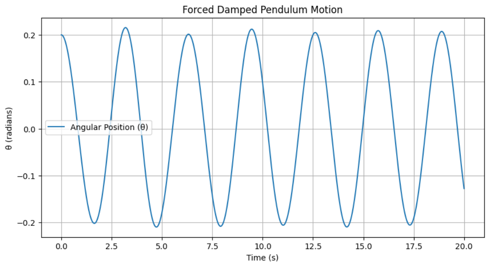
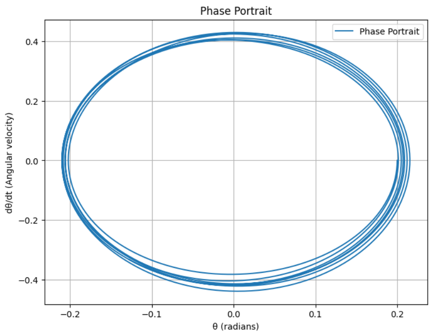

Problem 2
Mathematical Analysis of the Forced Damped Pendulum
1. Theoretical Foundation
A forced damped pendulum represents a system under the influence of an external force while experiencing frictional damping. The equation governing this system is:
Where: - ( \theta ) : Angular position (in radians) - ( \beta ) : Damping coefficient - ( g ) : Gravitational acceleration - ( L ) : Length of the pendulum - ( A ) : Amplitude of the external forcing - ( \omega ) : Angular frequency of the external force
Small-Angle Approximation
If ( \theta ) is small, we can use the approximation ( \sin\theta \approx \theta ), reducing the equation to:
This linear differential equation can be analyzed using analytical methods.
2. Analysis of Dynamics
To understand the system's behavior, we analyze the following factors:
- Damping Coefficient (( \beta )): Determines how quickly oscillations diminish.
- Driving Force (( A )) and Frequency ( \omega ): Affect whether the system enters resonance or exhibits chaotic motion.
- Phase Transitions and Chaos: Under certain parameter values, the system may become chaotic.
3. Real-World Applications
The forced damped pendulum model is applicable in various physical systems: - Energy Harvesting Devices - Oscillations in Bridges and Buildings - Electrical Circuits (e.g., RLC circuits) - Biomechanics (Human Motion)
4. Implementation: Python Simulation
To observe the system's behavior over time, we can use Python to numerically solve the equations:
import numpy as np
import matplotlib.pyplot as plt
from scipy.integrate import solve_ivp
# Parameters
g = 9.81 # Gravitational acceleration (m/s^2)
L = 1.0 # Pendulum length (m)
beta = 0.2 # Damping coefficient
A = 1.2 # Forcing amplitude
omega = 2.0 # Forcing frequency
def forced_damped_pendulum(t, y):
theta, omega_dot = y
dtheta_dt = omega_dot
domega_dt = -beta * omega_dot - (g / L) * np.sin(theta) + A * np.cos(omega * t)
return [dtheta_dt, domega_dt]
# Initial conditions
y0 = [0.2, 0.0]
t_span = (0, 20)
t_eval = np.linspace(t_span[0], t_span[1], 1000)
# Solve the equation
solution = solve_ivp(forced_damped_pendulum, t_span, y0, t_eval=t_eval)
# Plot results
plt.figure(figsize=(10, 5))
plt.plot(solution.t, solution.y[0], label='Angular Position (θ)')
plt.xlabel('Time (s)')
plt.ylabel('θ (radians)')
plt.title('Forced Damped Pendulum Motion')
plt.legend()
plt.grid()
plt.show()

5. Phase Portraits and Chaos Transitions
To analyze chaotic behavior, we can visualize phase portraits (Poincaré sections). The following plot represents the phase space motion:
plt.figure(figsize=(8, 6))
plt.plot(solution.y[0], solution.y[1], label='Phase Portrait')
plt.xlabel('θ (radians)')
plt.ylabel('dθ/dt (Angular velocity)')
plt.title('Phase Portrait')
plt.legend()
plt.grid()
plt.show()

6. Conclusions and Insights
- Higher damping results in the system reaching equilibrium without oscillations.
- Near resonance frequency, large amplitude oscillations occur.
- Increasing forcing amplitude may lead to chaotic transitions.
This analysis provides a powerful model for applications in engineering and natural sciences. By using Markdown, we can document and explore the pendulum system’s dynamics in depth.